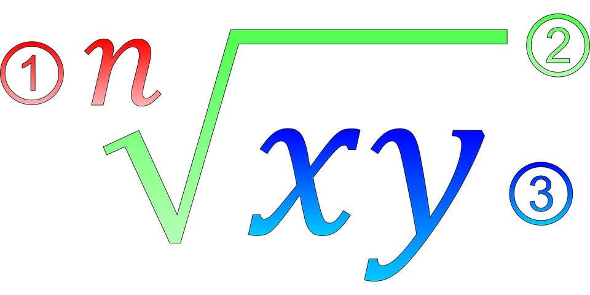
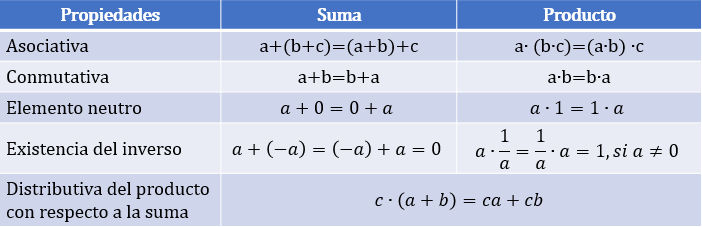

MATEMÁTICAS
OPERATIVAS

INTERACTIVO

MATEMÁTICAS OPERATIVAS
INTERACTIVO
Guilda Viviana Dávila Durán
Marco Tulio Mesa Cardona
Juan Guillermo Arango Arango
Institución Universitaria Pascual Bravo
Fondo Editorial Pascual Bravo
Medellín
Título de la obra
Matemáticas Operativas
Autores
Guilda Viviana Dávila Durán
Marco Tulio Mesa Cardona
Juan Guillermo Arango Arango
Primera edición: 2019
Diseño del libro: Juan Guillermo Rivera Berrío Fondo Editorial Pascual Bravo
Diseño de cubierta: Diana María Velásquez García
Librería turn.js: Emmanuel García
Herramienta de edición: DescartesJS
Fuente: Amaranth
Calle 73 73A-226
PBX: (574) 4480520
Apartado 6564
Medellín, Colombia
www.pascualbravo.edu.co

Tabla de contenido
0.4. Los números irracionales13
0.7. Propiedades de las operaciones con los reales21
0.8. Operaciones entre conjuntos numéricos21
0.10. Operaciones con fracciones33
0.12. Conjuntos e intervalos45
0.13. Valor absoluto y distancia49
0.15. Aplicaciones con porcentajes52
1.1. Propiedades de la potenciación60
iii
Tabla de contenido
1.2. Operaciones con potencias62
1.3. Simplificar expresiones potencias
2.1. Propiedades de los radicales
2.2. Operaciones con expresiones radicales
2.3. Simplificar expresiones radicales
Capitulo 3. Conceptos fundamentales de algebra
3.1. Operaciones entre expresiones algebraicas no racionales(+,-,x)
3.6. Descomposición de un polinomio en factores por el método de evaluación
3.7. Operaciones entre fracciones algebraicas
3.8. Potenciación, radicación y racionalización
Capitulo 4. Sistemas de ecuaciones algebraicas
4. Sistemas de ecuaciones algebraicas
iv
Tabla de contenido
4.2. Sistemas de ecuaciones lineales 2x2 y 3x3
4.3. Ecuaciones de segundo grado con una incógnita
4.4. Ecuaciones de grado n, binomias y trinomias
4.5. Sistema de ecuaciones no lineales 2x2
Capitulo 5. Fracciones parciales
Capitulo 6. Ecuaciones logaritmica y exponencial
6. Ecuaciones logaritmica y exponencial
6.1. Propiedades de los logarítmos y las potencias
7.3. Definición de funciones trigonométricas
7.4. Signos de las funciones trigonométricas
7.5. Funciones trigonométricas de ángulos cuadrantales
7.6. Funciones trigonométricas del triaángulo rectángulo
7.7. Funciones trigonométricas de ángulos notables
7.8. Reducción de ángulos al primer cuadrante
7.9. Funciones trigonométricasde ángulos coterminales
v
Tabla de contenido
7.10. Funciones trigonométricas de ángulos en posición normal
7.11. Gráficas de las funciones trigonométricas
Capitulo 8. Trigonometría Analítica
8.1. Identidades trigonométricas
8.2. Fórmulaa de adición y sustracción
8.3. Fórmula para ángulos dobles y medios
8.5. Aplicaciones de laas funciones trigonométricas
8.6. Angulo de elevación y ángulo de depresión
8.11. Gráficas de las funciones trigonométricas
vi
vii
Prólogo
De la colección iCartesiLibri surge este libro digital interactivo, diseñado de tal forma que permita el aprendizaje significativo a través de la intervención directa y personal del usuario, el cual se convierte en el protagonista del libro, en tanto que podrá interactuar con algunos objetos de aprendizaje. Estos objetos de aprendizaje interactivos fueron diseñados con el editor DescartesJS y GeoGebra.
Todos los recursos incluidos en este libro se basan en el estándar HTML5 y consecuentemente son plenamente accesibles y operativos en cualquier ordenador, tableta o smartphone sin más que utilizar un navegador compatible con dicho estándar. Diseñar en HTML5, significa que usaremos:
- Lenguaje HTML
- Hojas de estilo CSS
- Programación en JavaScript
viii
Fundamentos aritméticos
Guilda Viviana Dávila Durán
Marco Tulio Mesa Cardona
Juan Guillermo Arango Arango
0. Conjuntos numéricos
Los conjuntos numéricos son agrupaciones de números con determinadas características que los diferencian de los demás, recordaremos el conjunto de los reales (ℝ), los racionales (ℚ), los enteros (ℤ), los naturales (ℕ) y los irracionales (ℚ').
| 0.1. Los números naturales (ℕ) El conjunto se formalizó para dar respuesta a la necesidad de contar en una base generalizada, la base 10. Con los dígitos se forma cualquier número natural. El conjunto de los números naturales, se denota por N, y se representa así: |
ℕ = {1, 2, 3, 4, 5, 6, 7,…}
0.2. Los números enteros (ℤ).
El conjunto surge de la necesidad de dar solución general a la sustracción, cuando el sustraendo es mayor que el minuendo, esta sustracción no tiene solución en los números Naturales. Por ejemplo: 5-20?. Se denota por (Z) y se representa así:
ℤ = {...,-3,-2,-1,0,1, 2, 3,…}
0.3. Los números racionales (ℚ).
Son un subconjunto de los números reales, conformado por el conjunto de los
11
enteros (ℤ) y los naturales (ℕ). Es el resultado del cociente entre dos enteros pq, siempre y cuando el denominador (q) sea diferente de cero

Los números racionales se ubican en una de las siguientes características: Ser entero, tener una expresión decimal finita, o tener una expresión decimal infinita periódica.
Ejemplos: 102 = 5, 308 = 3,75 y 23 = 0,66666666
En la siguiente escena interactiva, diseñada por Carlos Rojas Hincapié1, puedes interactuar cambiando el numerador y el denominador de la fracción y pulsar solución, lo cual permitirá que se presente una representación gráfica, dividiendo cada intervalo de una recta numérica en espacios iguales que representan números enteros. También, puedes hacer uso del zoom para visualizar mejor la partición en la recta numérica o, si lo deseas, hacer clic en el botón ampliar para ver la escena en un tamaño más grande.
Prueba con las siguientes fracciones: 34, 75, …
12

0.4. Los números irracionales (ℚ')
Es el conjunto de números cuya expresión decimal no es finita ni periódica, estos números no pueden transformarse en una fracción. Se denota con la letra (ℚ'). Como ejemplos de ellos tenemos todas las raíces no exactas como √3, √5, etc., igualmente el número π, la constante "e" de la base de los logaritmos naturales, entre otros.
Representación gráfica del conjunto de los números reales.
En la figura 1., se puede visualizar la representación gráfica de los números reales.
13

Figura 1. Conjuntos numéricos (adaptado del libro Precálculo de Stewart2
0.5. Los números reales (ℝ).
Es el conjunto de números formado por la unión de los números Racionales (ℚ) y los Irracionales (ℚ'). Se denota por la letra R y se representa así:
ℝ = { ℚ ⋃ ℚ' }
0.6. Los números complejos (C).
Es el conjunto formado por la unión de los números reales y los números imaginarios, incluyen todas las raíces de los polinomios, a diferencia de los reales. Un número complejo puede representarse de la forma a a + bi, que es la suma de un número real y
14
un número imaginario. Se denota por C y se representa así:
C = { ℝ ⋃ i }.
Los números imaginarios son números complejos, cuya parte real es igual a cero, por ejemplo: los números 5i, i o –i son números imaginarios, donde la letra i denota la raíz cuadrada de -1 .
i = √-1, por lo tanto i2 = -1
Igualdad de números complejos:
( a + bi ) + ( c + di ), si y sólo si a = c y b = d
( 3 + 2i ) + ( 3 + 2i ) = 2( 3 + 2i )
Suma de números complejos: Se suma la parte real y la parte imaginaria
( a + bi ) + ( c + di ) = ( a + c ) + ( bi + di )
( 4 + 2i ) + ( 5 + 3i ) = 9 + 5i
Producto de números complejos: Se aplica la propiedad distributiva y se suman los términos semejantes, teniendo en cuenta que la parte real debe quedar a la izquierda y la parte imaginaria a la derecha.
15
Nota:
Tener en cuenta que i2 = -1
( a + bi) + ( c + di) = ac + adi + bci + bd(-1)
=( ac - bd ) + ( ad +bc )i
Ejemplo:
( 4+2i)( 5+3i ) = ( 20-6 ) + ( 12 + 10 )i
=14 + 22i
División de números complejos: Se debe tener en cuenta racionalizar el denominador, es decir; multiplocar numerador y denominador por la conjugada del denominador
( a + bi )( c + di ), con ( c + di ) ≠ 0
( a + bi )( c + di )×( c - di )( c - di )
( a + bi )( c + di )=ac + adi + bci -b di2c2-(di)2
16
=ac + (ad + bc)i - bd(-1)c2-d2(-1)
=ac +( ad + bc)i + bdc2+d2
=(ac + bd)(ad + bc)ic2+d2
Ejemplo: ( 4 + 2i)( 5 +3 i) = ( 4 + 2i)( 5 + 3i)×( 5 - 3i)( 5 - 3i)
(4×5)-(4×3i)+(2×5i)-(2×3i2 )52-(3i)2
20 - 12i + 10i - 6(-1)52+32
20 - 2i + 625 + 9
26 - 2i34
17
Separamos el denominador y simplificamos
2634 - 2i34 = 1317 - i17
Antes de empezar a clasificar los números propuestos en la escena interactiva “Clasifica los siguientes números” y así dar inicio a las operaciones básicas que te abrirán el camino para resolver ejercicios en contexto aplicando conjuntos numéricos y propiedades de las expresiones aritméticas, en el siguiente video, realizodo por Ana Rivera1,recordarás lo que se ha visto hasta el momento.
18
Ejercicio de conocimiento: Arrastra cada número a la casilla correspondiente
19
En la siguiente escena interactiva, podrás identificar el número dado al oprimir los botones correspondientes, según el conjunto numérico al cual pertenece. Basta con optimir el botón correspondiente ℕ (Naturales), ℤ (Enteros), ℚ (Racional), ℚ' (Irracional) o ℝ (Real) y verifica la respuesta.
20
0.7. Propiedades de las operaciones con los reales.
Las operaciones definidas en los reales cumplen ciertas propiedades.
Veamos algunas de ellas: Sean a, b y c números reales cualesquiera.

Tabla 1. Propiepades de las operaciones en ℝ
0.8. Operaciones entre conjuntos numéricos.
Cuando se realizan operaciones entre los conjuntos numéricos, se debe tener en cuenta la aplicación de la propiedades mencionadas anteriormente.
En caso de presentase presentarse signos de agrupación, como llaves, corchetes o paréntesis, se recomienda tener en cuenta las siguientes indicaciones:
♦ Los signos de agrupación indican el orden en que se deben realizar las operqaciones
♦ Los paréntesis deben estar dentro de los corchetes y los corchetes dentro de llaves
21
♦ Se quitan primero los parénesis, luego los corchetes y finalmente las llaves
♦ Se tienen en cuenta los signos de las diferentes operaciones aritméticas, sin olvidar que signos iguales dan positivos y signos contrarios dan negativo, esto es:

♦ Siempre que un signo de agrupación (paréntesis, corchetes o llaves) lo preceda un valor negativo, todos los signos que esten dentro del signo de agrupación cambian.
♦ De igual forma, si se requiere utilizar un signo de agrupación y el signo que lo precede es negativo, se deben cambiar todos los signos en su interior.
♦ En operaciones aritméticas mixtas, primero se realizan las multiplicaciones y divisiones y luego las sumas y restas.
Ejemplo:
1. 13 + {2 + [6 + 3 + (8 + 7)]}
22
13 + { 2 + [ 6 + 3 + ( 8 + 7 )] } = 13 + { 2 + [ 9 +15 ]}
13 + { 2 + [ 9 +1 5 ]}
13 + { 2 + 24 }
13 + { 26 }
13+26
39
2. 13 - { 2 + [ 6 +3 - ( 8 + 7 ) ]}
13 - { 2 + [ 6 + 3 - ( 8 + 7 ) ] } = 13 - { 2 + [ 9- ( 15 )]}
13 - { 2 + [ 9 - 15 ] }
13 - { 2 + [ - 6 ] }
13 - { 2 - 6 }
13 - { -4 }
13 + 4
17
3. 20 - { 7 + 2 [ 3 - 2 ( 7 + 9 ) + 5 ( 6 - 2 )]}
23
20 - { 7 + 2 [ 3 - 2 ( 7 + 9 ) +5 ( 6 - 2 )]} = 20 - {7 + 2 [3 - 2 (16 )+5 (4 )]}
20 - { 7 + 2 [ 3 - 32 + 20 ]}
20 - { 7 + 2 [ - 9 ]}
20 - { 7 - 18 }
20 - { -11 }
20 + 11
31
TEOREMA FUNDAMENTAL DE LA ARITMÉTICA.
Todo entero positivo se puede representar de forma única como producto de factores primos excepto por el orden.
Ejemplo:
20808 = 23 ∙ 32 ∙ 172, 3600 = 24 ∙ 32 ∙ 52
NÚMEROS PRIMOS.
Se denomina número primo a todo número natural diferente de uno, cuyos únicos divisores POSITIVOS son el mismo número y la unidad; los números que no son primos se denominan compuestos. Eratóstenes de Cirene (276-194 a de C) Matemático griego,
24
ideó una forma de determinar los primeros números primos al construir la denominada Criba de Eratóstenes. Así los primeros 100 números primos son los siguientes:

Tabla 2. Primeros 100 números primos
MÍNIMO COMÚN MÚLTIPLO
El Mínimo Común Múltiplo (“m.c.m.”) de dos o más números naturales es el menor número natural (distinto de cero) que es múltiplo de todos ellos.
Hallar al m.c.m de 4, 8 y 12
m(4) = {4 , 8 , 12 , 16 , 20 , 24, …}
m(8) = {8 , 16 , 24 , …}
m(4) = {12, 24 , …}
Así, el m.c.m(4,8,12) = { 24 }
Otro método es descomponer los números en factores primos y tomar los factores comunes y no comunes con su mayor exponente..
25

m.c.m(4,8,12) = { 23 ∙ 3 }
m.c.m(4,8,12) = { 24 }
MAXIMO COMÚN DIVISOR
El Máximo Común Divisor (“M.C.D.”) de dos o más números naturales es el mayor divisor posible de todos ellos.
Hallar al M.C.D de 48 y 60
D(48)={1 , 2 , 4 , 6 , 8 , 12 , …}
D(60)={1 , 2 , 3 , 4 , 5 , 6 , 10 , 12 , …}
M.C.D(48,60) = { 12 }
Veámos ahora utilizando el otro método, para el cálculo se descomponen los números en factores primos y se toman los factores comúnes con su menor exponente.
26

M.C.D(48 , 60) = { 22 ∙ 3 }
M.C.D(48 , 60) = { 12 }
Hallar el M.C.D y el m.c.m de:
(72 , 108 , 60) , (428 , 376)
(148 , 156) , (3600 , 1000)
(14 ,7 8 , 36) , (36 , 62 , 18)
(15 , 16 , 18) , (32 , 40 , 48)
(36 , 54 , 30) , (16 , 20 , 24)
27
CRITERIOS DE DIVISIBILIDAD
Un número es divisible por otro, cuando cumple las condiciones que presentan a continuación:

Tabla 3. Criterios de divisibilidad
28
0.9. Fracciones.
Los fraccionarios pertenecen al conjunto de los racionales, están formados por dos números enteros; el numerador que está en la parte de arriba y el denominador que está en la parte de abajo. Así un fraccionario se expresa de la forma:
ab, con b ≠ 0
Fracciones equivalentes
Dos fracciones son equivalentes cuando el producto de extremos es igual al producto de medios.
ab=cd, con ad = bc
Si se multiplica o divide el numerador y el denominador de una fracción por un número entero, distinto de cero, se obtiene otra fracción equivalente a la dada. Al primer caso le llamamos amplificar, al segundo simplificar.
Ejemplo:
Amplificar por 4 el racional 25
25×44=820
29
Simplificar el racional 820
820=410=25
25=820, son fracciones equivalentes
Simplificar las siguientes expresiones racionalaes

Ejemplos:
| 45120 | Se busca el M.C.D., que para el ejemplo ejemplo el 15 |
| 45÷15120÷15 | Se divide numerador y denominador por el M.C.D. encontrado, para obtener el resultado final de 38 |
30
Propiedades de las fracciones

Tabla 4. Propiedades de las fracciones
Tipos de fracciones
Fracciones Propias: Cuando el numerador es menor que el denominador. Su valor está comprendido entre cero y uno.
Ejemplos: 25 ,37 ,911
Fracciones Imropias: cuando el numerador es mayor o igual que el denominador. Su valor es mayor o igual a uno.
Ejemplos: 52 ,73 ,119 ,55.
En el siguiente objeto interactivo se puede ver la representación en la recta de fracciones propias e impropias
31
En la siguiente escena interactiva, diseñada por María Fernanda Mejía Palomino, Leopoldo Aranda Murcia8, podrás entender la diferencia entre fracciones propias e impropias, en el momento que hagas uso de los deslizadores.
32
Fracciones Mixtas: Este tipo de fracciones está compuesta de una parte entera y otra fraccionaria. Se obtienen de una fracción impropia, donde la parte entera corresponde al cociente y la fraccionaria del residuo(numerador), dividido por el divisor (denominador)
Ejemplos
325 , 137 , 5911
Para fracilitar su comprensión, analizaremos la fraccion impropia 175

325
Para pasar un número mixto a una fracción impropia se procede de la siguiente manera:
33

a. Se multiplica la parte entera por el denominador de la parte fraccionaria.
b. Se le suma el numerador de la parte fraccionaria.
c. Luego se divide por el denominador de la parte fraccionaria.
175
0.10. Operaciones con fracciones.
Suma y resta de fracciones: En la suma y resta de fraccionarios se pueden presentar dos tipos de operaciones, cuando tienen el mismo denominador (hogéneas) y cuando su denominador es diferente (heterogénas).
♦ Suma y resta de fracciones homogéneas: En este caso se suman o restan los numeradores y se pone el mismo denominador.
Ejemplos: En el siguiente cuadro, podrás realizar los ejercicios propuestos para que te familiarices con el procedimiento.
34

♦ Suma y resta de fracciones heterogéneas: Se puede hacer lo siguiente.
Para la suma o resta de dos fraccionarios, con denominadores pequeños (menores que 10), se recomienda aplicar la siguiente propiedad:
ab±cd=ad ± bcbd, con b y d ≠ 0
Ejemplos
53±45=25 ± 1215
85±36=48 ± 1530
35

Para la suma o resta de dos fraccionarios, con denominadores grandes (mayores que 10), se recomienda encontrar el (m.c.m) entre los denominadores y hacer lo siguiente:
a. Determinar el m.c.m de los denominadores.
b. Dividir el m.c.m encontrado, por el denominador de la primer fracción.
c. Multiplicar resultado anterior, por el numerador de la primer fracción.
d. Se repite el mismo procedimiento para cada uno de las demás fracción.
e. Finalmente se realizan las operaciones y se simplifica, si es posible.

♦ Suma y resta de fracciones mixtas: Para sumar o restar fracciones mixtas, lo más conveniente es convertirlas en fracciones impropias y realizar las sumas o restas como se indicó anteriormente.
36
También se pueden convertir las fracciones en fracciones equivalentes y de esta forma llevar las operaciones con fracciones heterogénas. a homogéneas
En el siguiente ejemplo se realiza el procedimiento.
Ejemplo
712+16-524
Debes realizar los siguientes pasos:
a. Determinar el m.c.m de los denominadores (en el ejemplo es 24).
b. Convertir las fracciones heterogéneas en homogéneas, multiplicando numerador y denominadr por el factor que haga falta para que el denominador de cada fracción sea igual al m.c.m.
Veamos
712 + 16 - 524 = 7(2)12(2) + 1(4)6(4) - 5(1)24(1)
Ahora se tienen las siguientes fracciones equivalentes:
1424 + 424 - 524 = 14 + 4 - 524 = 1324
37
En el siguiente escena interactiva, diseñada por Diego Luis Feria Gómez2, puedes interactuar y ampliar los conocimientos adquiridos.
38
♦ Producto de fracciones: Para multiplicar fraccionarios, se multiplican numeradores y denominadores entre sí.
Se aplica la siguiente propiedad:
ab • cd=ad • bcbd, con b y d ≠ 0

♦ División de fracciones: Se multiplica el numerador del primer fraccionario, por el denominador del segundo fraccionario (será el numerador) y el denominador del primero por el numerador del segundo (será el denominador). En conclusión, se multiplican en cruz.
Se aplica la siguiente propiedad:
ab ÷ cd=ad • bcbd, con b y d ≠ 0

39
Ejercicios de aplicación:
a. La población de un pequeño pueblo disminuyó de 1 750 a 1 700 habitantes. ¿Cuál es el porcentaje de decrecimiento?
R/. 1750-17001750 = 0.0285714 = 0.0285714 × 100 % = 2.86 %
b. El salario por hora de trabajo de un estudiante se elevó de 5.25 dólares a 5.75. ¿Cuál es el porcentaje de incremento?
R/. 5.25-5.755.25 = 0.952381 = 0.952381 × 100 % = 9.52 %
c. ¿Cuál es el descuento y el precio de oferta de un balón de volibol si el precio normal es de $28,60 y hay 25% de descuento?
R/. Descuento = $28.6 × 0.25 = $7.15
Precio Oferta = $28.6 × 0.75 = $21.45
0.11. Recta numérica.
Los números reales están ordenados de menor a mayor, de izquierda a derecha en lo que se conoce como la recta numérica. Decimos que a < x < b, siempre y cuando x - a y b - x son números positivos. Quiere decir que todos los números que se ubiquen a la izquierda de un punto de referencia cualquiera, serán menores que los que se ubique a la derecha.
40
De la gráfica de la recta numérica se puede concluir que a < x y que x a < b.

a < x < b
Si, a < b, a = b o a > b , se llama ley de tricotomía.
Si, a < b y b < c , entonces a < c
Se conoce como Propiedad transitiva.

Ejemplo: Si, x < 12 y 12 < y, concluimos de la propiedad anterior que x < y .Veamos el ejemplo graficamente.

Los intervalos pueden ser abiertos o cerrados, los abiertos se representan con parénteis y los cerrados con corchetes.
41
En la siguiente escena interactiva puedes darte cuenta del significado de lo que es un intervalo abierto y un intervalo cerrado. Observa cuando la escena te muestra en las opciones de intervalos, como incluye el valor cuando se trata de un intervalo cerrado y como se acerca con muchas cifras decimales, pero no lo toma cuando se trata de un intervalo abierto. También podrás ver como puedes desplazar el punto rojo, sólo hasta donde el intervalo te lo permite.
42
En la siguiente escena interactiva, diseñada por Alfredo Cortés Sánchez3, podrás interactuar realizando cambios en los rangos para que profundices en tus conocimientos.
43
En la siguiente escena interactiva, al realizar los ejercicios propuestos, pondrás a prueba los conocimientos adquiridos.
44
0.12. Conjuntos e intervalos.
Unión e Intersección de intervalos.
Unión de intervalos: En la unión de intervalos, se enccuentran todos los elementos que pertenecen a los conjuntos numéricos en referenacia.
Ejemplo: Sea A = [ -1 , 2 ) , B = [ 1 , 4 ] y C = ( -3 , ∞ )
Graficamente lo podemos representar de la siguiente forma:

Hallar:
| Ejercicio | Solución |
| A ∪ B | [ -1 , 4 ] |
| B ∪ C | ( -3 , ∞ ) |
| A ∪ C | ( -3 , ∞ ) |
| A ∪ B ∪ C | ( -3 , ∞ ) |
45
Intersección de intervalos: En la intersección de intervalos, se enccuentran SÓLO los elementos comunes que pertenecen a los conjuntos numéricos en referenacia.
Para una mejor comprensión, se continuará con el mismo ejemplo.
Sea A = [ -1 , 2 ) , B = [ 1 , 4 ] y C = ( -3 , ∞ )
Graficamente lo podemos representar de la siguiente forma:
Hallar:
| Ejercicio | Solución |
| A ∩ B | [ -1 , 2 ) |
| B ∩ C | [ 1 , 4 ] |
| A ∩ C | [ 1 , 2 ) |
| A ∩ B ∩ C | [ 1 , 2 ) |
Observa que no se incluye el número 2 en la intersección, ya que NO ES COMÚN para el conjunto A.
46
En la siguiente escena interactiva, diseñada por EducaticMeta4, podrás interactuar realizando cambios en los rangos para que profundices en tus conocimientos.
47
| En el siguiente video realizado por Matemáticas Profe Alex1, vas a repasar los conceptos de intervalos abiertos y cerrados explicados anteriormente y podrás ver cómo influyen en la solución de la unión de intervalos. De igual forma podrás ver la representación gráfica y en forma de intervalos de la respuesta final. |
| En el siguiente video realizado por Matemáticas Profe Alex2, vas a repasar los conceptos de intervalos abiertos y cerrados explicados anteriormente y podrás ver cómo influyen en la solución de la intersección de intervalos. De igual forma podrás ver la representación gráfica y en forma de intervalos de la respuesta final.. |
48
0.13. Valor absoluto y distancia
Valor absoluto.
El valor absoluto de un número a, denotado por ∣ a ∣ , es la distancia desde a hasta 0 sobre la recta numérica. La distancia es siempre positiva o cero, de modo que tenemos para cada número a ∣ a ∣ ≥ 0. Tenga en cuenta que –a es cuando a es negativa.

Hallar:
| Ejercicio | Solución |
| a. ∣ 3 ∣ | 3 |
| b. ∣ -3 ∣ | - ( -3 ) = 3 |
| c. ∣ 0 ∣ | 0 |
| d. ∣ 3 - π ∣ | - ( 3 - π ) = π - 3 |
En la tabla siguiente, encontrará las principales propieddes del valor absoluto. Así como un ejemplo de cada una de ellas y su descripción.
49

Tabla 5. Propiedades del valor absoluto
Distancia entre dos puntos.
Si a y b son números reales, entonces la distancia ( cero o siempre positiva) entre ellos en la recta numérica es:
d( a , b ) = ∣ b - a ∣
Ejemplos: En el siguiente cuadro se presentan tres ejercicios con la solución y su representación gráafica.
50
0.14. Regla de tres
Es un mecanismo mátemático que sirve para la solución de problemas que tienen una proporcionalidad, se deben conocer tres datos y con su utilización, se encuentra el cuarto. Siempre que existe un cambio en uno de los datos, los otros cambiaraán en forma proporcional.
Ejemplo: Si para la elaboración de una torta se necesitan 5 huevos, cuántos se necesitarán para la elaboración de siete (7) tortas?.
Solución: Se define con la variable X, la canatidad de huevos que se necesitan para la elaboración de las 7 tortas.

( 1 ) X = 7 • 5 , luego X = 35 huevos .
Como existe una proporcionalidad o equvalencia, lo podemos resolver teniendo en cuenta la definición vista en la pagina 28 para fracciones equivalentes.
ab=cd, con ad = bc
17 = 5x, y se lee: Uno ( 1 ) es a siete ( 7 ) como cinco ( 5 ) es a x.
51
Aplicamos la definición de fracciones equvalentes y se resuelve de igual forma:
( 1 ) x = 7 • 5 , luego x = 35 huevos .
0.15. Aplicaciones con porcentajes.
En la siguiente escena interactiva, diseñada por Leslye RS, Fabián Colombo7, podrás observar que el denominador determina en cuantas partes se divide una unidad y el numerador determina la fracción (parte del denominador) o porcentaje que se toma. En la escena interactiva el “lado”, elevado al cuadrado determina el denominador y el deslizador es el numerador.
Observa lo que sucede al ingresar los lados 10, 8, 6 y mueve el deslizador (numerador) a 50, 32 y 18 respectivamente; en cada uno de ellos.
En cada cambio que realices, sobre la escena interactiva puedes presionar click derecho en tu mosue y dejarlo presionado, desplazando hacia la izquierda o derecha, hacia arriba o hacia abajo para una mejor visualización de la escena.
Puedes realizar diferentes cambios en el "lado" de la escena interactiva y mover el deslizador para que observes como cambia el fraccionario, el decimal y el porcentaje, en cada uno de los ejercicios que te propongas realizar.
52
53
Ejemplos:
1. Si compras un televisor, para el que su precio se estima en $1.800.000 y te dan un descuento del 15%, cuanto estarías pagando?
$1.800.000 - ($1.800.000 x 15100) = $1.800.000 - 270.000 = $1.530.000. Que sería equivalente a pagar: $1.800.000 x 0.85 = $1.530.000
2. Si se paga la matricula de la universidad la fecha indicada, se pagarán $1.980.000. Se excedes la fecha limite se te cobrará un 25% adicional.
$1.980.000 + ($1.980.000 x 25100) = $1.980.000 + 495.000 = $2.475.000. Que sería equivalente a pagar: $1.980.000 x 1.25 = $2.475.000
3. Si las ventas de determinado producto, para el mes de enero fueron de 250.000 unidades y en el mes de febrero las ventas de ese mismo producto alcanzo los niveles de 290.000 unidades, cuánto fue el crecimiento en las ventas?.
290.000 - 250.000250.000 = 0.16 = 16%
También puedes dividir las ventas de febrero por las ventas de enero y obtienes el incremento 290.000250.000 = 1.16, esto quiere decir que las ventas se incrementaron un 16%
54
En la siguiente escena interactiva, diseñada por @prende.mx5, podrás interactuar para observar las distintas maneras de representar porcentajes, explorar la relación existente entre porcentajes y fracciones, aprender a representar porcentajes y fracciones y finalmente pndrás a prueba los conocimientos adquiridos, al responder sin limite de tiempo 10 preguntas. !Buena Suerte!.
55
0.16. Practiquemos
En la siguiente escena interactiva, diseñada por Javier Cayetano Rodriguez6, podrás resolver los ejercicios planteados con aproximación de dos cifrras decimales y pondrás a prueba tus conocimientos.
56
En la siguiente escena interactiva, diseñada por Javier Cayetano Rodriguez7, podrás resolver los ejercicios planteados y pondrás a prueba tus conocimientos.
57
Capitulo 1
Potenciación
Guilda Viviana Dávila Durán
Marco Tulio Mesa Cardona
Juan Guillermo Arango Arango
Capitulo 1. Potenciación
2. Potenciación
En la potenciación se distinguen tres partes importantes, una base, un exponente y una potencia. El exponente son las veces que se debe multiplicar la base por sí misma y el resultado de este producto, es la potencia.


Ejemplos:
5 3 = 5 • 5 • 5 = 125
-3 3 = (-3 ) • ( -3 ) • ( -3 ) = 27
59
2.1. Propiedades de la potenciación
En la siguiente escena interactiva, diseñada por Miguel Angel Cabezón Ochoa8, podrás analizar las popiedades de las potencia con ejercicios propuestos.
60
En la siguiente escena interactiva, diseñada por Orlando, El Sueniero9, podrás resolver los ejercicios planteados y pondrás a prueba tus conocimientos.
61
2.2. Operaciones con potencias
En las siguientes operaciones con potencias, se aplicarán las propiedades de las potencias.
1. Producto de potencias de la misma base: Recordemos que para multiplicar potencias que tienen la misma base, se pone la misma base y se suman sus exponentes, esto es: a m • a n = a m + n .
Ejemplos:
| Ejercicio | Solución |
| a. 3 2 • 3 4 • 3 6 | 3 2 + 4 + 6 = 3 12 |
| b. 5 3 • 5 2 • 5 | 5 3 + 2 + 1 = 5 6 |
| c. 6 4 • 6 5 • 6 3 | 6 4 + 5 + 3 = 6 12 |
| d. 7 3 • 7 2 • 7 5 | 7 3 + 2 = 7 5 = 16.807 |
62
63
64
65
En la siguiente escena interactiva, diseñada por Leslye RS, Fabián Colombo7, podrás observar que el denominador determina en cuantas partes se divide una unidad y el numerador determina la fracción (parte del denominador) o porcentaje que se toma. En la escena interactiva el “lado”, elevado al cuadrado determina el denominador y el deslizador es el numerador.
Observa lo que sucede al ingresar los lados 10, 8, 6 y mueve el deslizador (numerador) a 50, 32 y 18 respectivamente; en cada uno de ellos.
66
Bibliografía
Abreu L., José y Muñoz P., Valentina (2004). proyectodescartes.org-Telesecundaria Obtenido de: http://proyectodescartes.org/Telesecundaria/materiales_didacticos
Barbero Corral, Eduardo (2004). ProyectoDescartes.org. Obtenido de: http://proyectodescartes.org/uudd/materiales_didacticos
Barnett, Raymon A. (1989). Álgebra y Geometría. Bogotá: 2° Ed. Ediciones MC Graw-Hill. 384 pag.
Rodríguez S, Benjamín y otros (1996). Matemáticas con Tecnología Aplicada. Bogotá: Ediciones Prentice Hall. 220 pag.
Ruiz Gil, Consolación (2014). proyectodescartes.org-EDADObtenido de: http://proyectodescartes.org/EDAD/materiales_didacticos
Uribe Calad, Julio A. (1989). Elementos de Matemáticas. Medellín: 2° Ed. Ediciones Bedout. 401 pag.
67